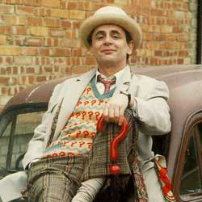

| Home The Doctors The Companions The Villains Show History |
The Seventh DoctorThe Seventh Doctor is an incarnation of the Doctor, the protagonist of the BBC science fiction television series Doctor Who. He is portrayed by Scottishactor Sylvester McCoy. Within the series' narrative, the Doctor is a centuries-old Time Lord alien from the planet Gallifrey who travels in time and space in his TARDIS, frequently with companions. When the Doctor is critically injured, he can regenerate his body; in doing so, his physical appearance and personality change. McCoy portrays the seventh such incarnation, a whimsical, thoughtful character who quickly becomes more layered, secretive, and manipulative. His first companion was Melanie Bush (Bonnie Langford), a computer programmer who travelled with his previous incarnation, and who is soon succeeded by troubled teenager and explosives expert Ace (Sophie Aldred), who becomes his protégée. The Seventh Doctor first appeared on TV in 1987. After the programme was cancelled at the end of 1989, the Seventh Doctor's adventures continued in novels until the late 1990s. The Seventh Doctor made an appearance at the start of the 1996 movie before the character was replaced by the Eighth Doctor. |
|
Katie Hyche |
Ann Marie Skjold |
Content derived from the Doctor Who Wikipedia Page. |